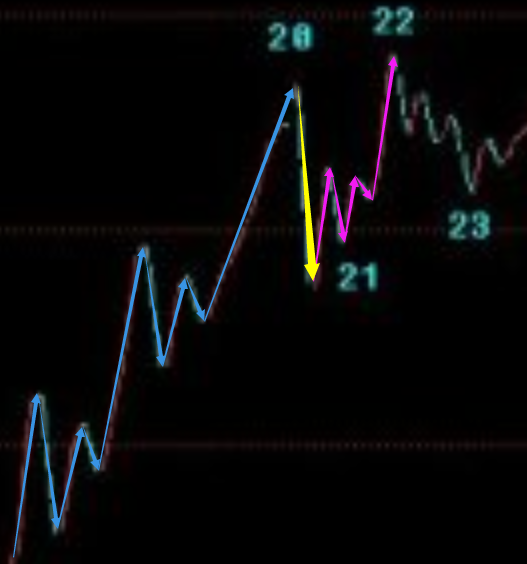
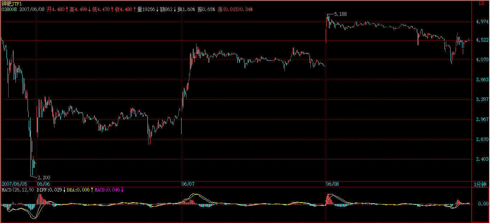
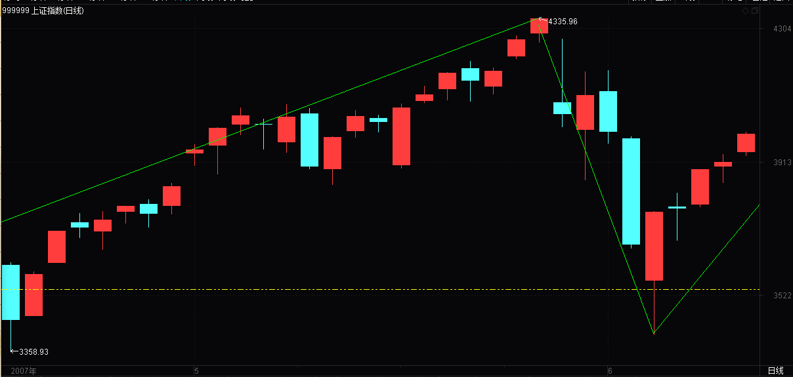
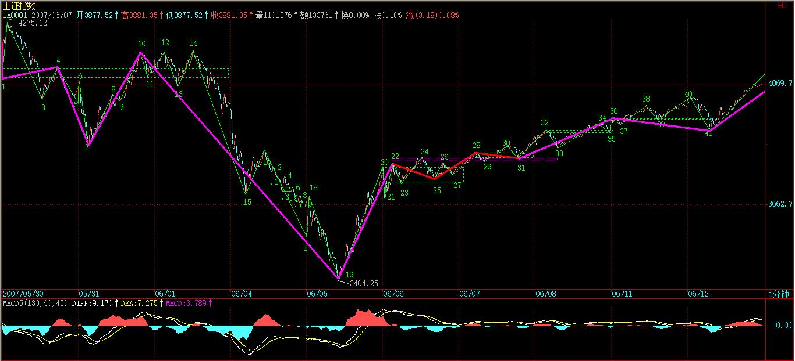

(2007-06-04 22:34:47)
明天收盘后要出一次差，去一趟曾419赋诗的地方，【韶山映山红】缠师可能是路过长沙的时候看到湘火炬广告牌，上文说的“马上要离开深圳去长沙，然后有人在机场接本ID去某市，”不知道这个某市是哪里，缠师说的419的地方。】
【韶山映山红】《偶见湘火炬广告，口占五绝。》(2007-05-15 15:14:19) 曾经湘火炬，今已鲁潍柴。十载风云客，七尺老残骸。】
【韶山映山红】000338潍柴动力。】
所以，先把课程送上，【韶山映山红】前一篇问答的16:36还说，要去聚会了，先下，明早见。这里聚会一回来就22:34又发这篇帖子。缠师讲到兴头上了。】今后几天都没时间写帖子，但每天收盘后的解盘，都会尽量按时附上。至于其他内容的帖子，等出差回来再说了。
【韶山映山红】上证指数。当日，当年，日K线图。笔划分。】
【韶山映山红】上证指数。当日，当年，30分钟K线图。线段划分。】
【韶山映山红】上证指数。530之后，1分钟K线图。递归走势划分。】
大盘大跌，除了清洗筹码，还可以清洗一下人。【韶山映山红】来这里，是期盼捡漏？还是追随缠师？是相信缠师这个人？还是相信她的理论？不同的动机，不同的忠诚度。今天，也还是一样的。】
本ID说过，这里没必要有这么多人，来这里的，如果不是希望成为猎鲸者的，就没必要来了。【韶山映山红】“股票不过是小道，但条条小道通大道，本ID在这里费口舌，有一个目的，是希望这里至少能有人通过学习以及自我磨练，最终能成为猎鲸者。其次，更重要的，要小道而大道，这才不枉来这里一趟。至于想把这个变成传销场所或来这里希望找点传销玩意的，那就入错门了，本ID这里不需要这么多人，至于那些希望小道而大道或至少有志于成为猎鲸者的，如果觉得有更好的地方，也没必要留在本ID这里。”《各位,今天爽了吗?》(2007-05-16 15:26:10)】
那种跌个40%就惊慌失措的，也不大适合市场。市场从来都是血腥场所，这点在前面已经反复说到，见不了血腥场面的，还是把钱好好去买国债，这样比较安心。【韶山映山红】没有血腥就要保本保息，以国家信誉担保的就只有国债了。】
股票就是废纸，该卖的时候不卖，把股票当宝，这就是投资的最大软肋。【韶山映山红】除非买股票只是为了分红，那是价值投资。只要期盼股价变动获益的，就都是投机。只要是投机，股票就只是介质，与商品属性没有本质上的关系，也就没有好赖可言。买不是因为好，卖不是因为赖，买卖的本质都是对价格涨跌的预期。】
如果你看图形操作时，做不到无我无股票，只有走势图形，那基本可以不看图了，【韶山映山红】剔除好恶因素，与价格涨跌预期息息相关的就只有走势图形。】因为有我有股票，被自己的贪婪恐惧所牵引，你看的图，也不过就是自己的贪婪与恐惧，那何必看图？【韶山映山红】世界，就是我们内心的投射。“猎物不是你所想到的，而是你看到的。相信你的眼睛，不要相信你的脑筋，更不要让你的脑筋动了你的眼睛。被脑筋所动的眼睛充满了成见，而所有的成见都不过对应着把你引向那最终陷阱的诱饵。”】
【韶山映山红】若禅精舍（陈秋明）：
无我无股票，这零向量的状态，属于一种比较难得的状态，体验过的人知道是怎么回事，但想保持以及随意切换就比较难，更不用说没有体验过的人根本就不知道是怎么一回事了。几年前，在厦门写下“此心清净，随境而动”就是当时有那么一两分钟在那种状态里面，出来后的回想。在那个状态里，头脑是异常清醒的，但同时又没有杂念，看到什么就是什么，听到什么就是什么，没有关于看到的或者听到的任何联想。
在盘中，这是最佳的操作状态。而其实大多数人，在看盘时，对走势的感觉，只是自身情绪变化的投影。相对于技术而言，这才是真正的难点，然而这难点仅凭技术学习，是解决不了的。
很多人也觉得学习技术就能怎么怎么样，而这些虚无缥缈的，其实只是自己没有体验过而没有概念的心态之类的内容，往往被看做是没有实际用途的东西，众生颠倒可见一斑。更有意思的是，很多看缠论的人，对那些买点和盈利的必然性深信不疑，而对这些内容包括论语之类却置若罔闻，终究还是依据自己的喜好，去选择了自己愿意相信的内容。
】
说一个最简单的例子，就算你没技术，只按最简单的跌破5日线走，那请看看你该在什么时候走，且不说对于具体的个股了。【韶山映山红】“跌破5日线走”，做不到530的二卖出逃，只能勉强躲过六四这一天的大阴线。】
这次是一个很好的实习机会，请回想一下那些卖点时，你自己究竟在干什么？心里是不是有很多幻想，被幻想蒙蔽了眼睛？
看图操作，唯一的对象只有图，谁说都没用，市场是当下发生着的，没有人能替你去反应。【韶山映山红】缠师来说也没有用。最终还是要自己过关。】
【韶山映山红】若禅精舍（陈秋明）：
5日线监控卖点，是很简便也是很常用的方式，但技术上的跌破，传统上有个跌破后三天回抽不回来的定义，这种定义有点太过滞后，三天足够跌去20%了。在缠论中，5日线往往和顶分型、小级别二卖与三卖联系起来，整体作为一个卖点的监控方式，这样基本上都能在刚开始下跌的时候卖掉。但既然选择了这种方式，那么最高点是肯定要放弃的，就确定性来说，5日线可能更好一些。
】
先把市场放一边，继续图解分析，把这次跌势的图形连续分析下去，这样大概对各位的理解与分析有一定的帮助。请看下图：
【韶山映山红】20070604.jpg（2007-06-04 22:32）】缠师这张配图的指标是MACD(24,52,9)，不是我们常用的默认MACD(12,26,9)。其中，构成白线的短期均线、长期均线都加了一倍，黄线对白线的处理没有变。这个，是否可以成为参数选择的规则？★可以做个专题，以后研究。】
各位可能还会对如何去确定线段有很大疑惑，图上已经用数字标记了从30日开始的1分钟图上的线段。
为什么这样标记？
例如14-15间带红绿箭头这一段为什么不是线段？【韶山映山红】为什么单独挑出“带红绿箭头这一段”来说呢？线段类趋势是一种典型的走势，但具体到这个地方，绿箭头之前的“上”为什么不予考虑呢？缠师自己心里明白，却不知道我们不明白，很多的细节都没有讲透。★可以做个专题，以后研究。】
这很简单，因为这段中的下-上-下-上-下中，没有任何的重合，也就是第二个上的终点没有触及第一个上的起点，【韶山映山红】14-15是下跌线段，类似于后面课程所说的特征序列，这里考察“相邻的上”的重合情况。这里的绿箭头前面那个“上”和绿箭头后面那两个“上”都有重叠，只是后面的“上”幅度很小。这时候的规则还是有些模糊，所以后面课程推出了更多具体规则，线段也进化到了有唯一正确答案的模式。另外，按照后期由笔成线段的规则，这里的反弹也都没有形成线段破坏。】
这种图形，和直接的一个下没有任何区别。【韶山映山红】这一段说的是重叠的三折才能成段。第二个上的终点没有触及第一个上的起点，也就是说，属于线段类下跌趋势的结构。线段类趋势在级别上是线段的级别，“直接的一个下”也就是一笔，在级别上还是有区别的。总不能说笔的线段类趋势和笔是一个级别吧？那么，这里说“没有任何区别”是指什么？如果只说结构像是线段类趋势就不是线段，前面的9-10和“带红绿箭头这一段”是一样的结构，那时候缠师并没有说这个问题。这里才想起来，还是另有原因？★以后研究。】
【韶山映山红】14-15的前半段图形对应了61课之后的长沙草图的这个图形。】

【韶山映山红】假如，第二个上的终点触及到第一个上的起点，和直接的一个下有区别了，这里又是什么样的划分呢？】
【韶山映山红】或者继续演化成这个样子呢？】
【韶山映山红】是否又应该回到三段的划分？】
【韶山映山红】是否可以对应61课之后的长沙草图的这个图形？以后研究。】
【韶山映山红】还有一种解读，就是重新理解“带红绿箭头这一段”到底是哪一段。如果第二个上是红箭头开始的那一段，第一个上是绿箭头开始的那一段呢？】
而一个线段，除非是缺口，【韶山映山红】缺口，默认都是指开盘竞价造成的跳空缺口，盘中的缺口不算。】否则必须由至少上-下-上或下-上-下的三折组成，只要互相相邻的上或下不重合，则这个模式可以一直延伸下去而依然还是一个线段。【韶山映山红】这句话说明，线段进化到58课的时候还没有强调必须被线段破坏，只强调本身的构成是否符合要求。“互相相邻的上或下”的意思是互相相邻的上或互相相邻的下，就是后面课程的特征序列的意思。如果互相相邻的上或下重合呢？线段类走势就扩展升级出一个更大级别的中枢类走势，这个中枢要单独作为一个线段，前面的一段也就结束了。】这里就不难明白14-15为什么只是一段线段了。【韶山映山红】即使和箭头前面的有重叠，也只是线段类下跌变成高一个级别的中枢类下跌，还是线段的级别。】
【韶山映山红】若禅精舍（陈秋明）：
三折这种定义，显然是来自于走势必完美，这里的分段规则，与后面的线段看似差不多，但区别其实很大，但目的都是一样的，就是在当前级别图形上，尽可能的按同级别多空能量分解。
根据走势必完美的分段规则，在盘中的实际使用中，更加灵活与务实，例如在一分钟图形上，这种分段规则可以直接解析当前的一分钟图形，但线段不行，线段在当前图形上是被看做没有内部结构的，严格意义来说必须向上递归成走势类型，再以走势类型作为分析元件。
但走势必完美的分段规则，由于规则定义不太好严格界定，更多程度上需要的是分解者自身对于走势的理解。但后文定义的线段不存在这种主观性，那个定义有着严格的界定条件。而这二者，其实并没有什么好与不好的区别，区别只在使用的人身上，与理论就没什么关系了。
】
那么为什么14-15这线段不构成合适的买点，因为在下面的MACD辅助中，可以看出这一段的力度比前面所有的都大（这从黄白线就一目了然了），
【韶山映山红】1分钟K线图，配1分钟MACD和模拟5分钟MACD。】
那当然不构成任何的1分钟以上的背驰，最多就是1分钟以下最小级别的背驰。【韶山映山红】如果做背驰判断，最低是线段类背驰判断，往上是1分钟级别走势类型的背驰判断、5分钟级别走势类型的背驰判断。“这一段的力度比前面所有的都大”，所以三个级别的背驰判断都被否定了。】
在15下MACD小红箭头处，比较绿柱子的面积，就可以发现这个小的背驰，因此就有了15-16的反弹，【韶山映山红】之前的每一个微型下跌+盘整都不背驰，一直到最后这个盘整背驰结束线段。这个微型的“下跌+盘整+下跌”中的盘整只是像盘整，没有重叠部分，与其说这个背驰，还不如说最后三笔不背驰，15的转折属于小转大，所以15-16反弹的力度也很有限，第一笔反弹就不到位，没有涨破前低。15-16反弹的第三笔涨破前低，线段成立。】
该反弹在14-15最后一个上附近受阻，十分技术。【韶山映山红】这里不是14-15线段的线段级别的盘整背驰，只是线段内部结构的盘整背驰，而且只是最后一个类似a+A+b的走势结构的盘整背驰，所以只保证这个高度，最多产生一个线段级的反弹，而且不能回到中枢DD点。】
【韶山映山红】这里在“最后一个上附近受阻”的技术解读是：回到起跌点。否则连反弹都不算。这也是分析涨破前高的背后的动力源。】

【韶山映山红】“十分技术”的反弹是什么样子的？任何背驰都可以归结为最后三段盘背反弹的观察。前低、前高和下跌的起点是三个观察点。
涨破前低是三段盘背的最低要求，不涨破前低就是小级别延伸破坏大级别背驰。
涨破前高才有反向盘背的比较，这里的盘背不对比前面的向上段，没有意义，对比的是前向下段，V型反转是反弹的判断依据，就像29课回到DD才是反弹一样。
涨破下跌的起点是转折的目标，就像29课回到ZD才是转折一样。
不是为了预测，是为了设定介入的边界。
盈亏比的计算，盈的计算点选择前低比较稳妥，前高是最大点，不应该选择下跌的起点。
】
而站在10-13构成的1分钟中枢来看，15-16这反弹反而是构成一个第三类卖点，【韶山映山红】走到16了，为什么中枢还没有从10-13调整为11-14呢？★如果考察向下的走势，中枢11-14是走势类型的中枢。这里7-12是线段类上涨趋势，背驰之后进入中阴阶段，中阴中枢就是10-13，决定后续走势方向的第三类买卖点都是中阴中枢10-13的，所以16是否三卖的判断依据是中枢10-13，而不是中枢11-14，否则三买和三卖就不是同一个中枢的了。★特别注意。】

本ID看了一下留言，有叫CCTV也看出这个是一个第三类卖点，但他的理由好象是这反弹没突破7这点所以是第三类卖点，这是不对的，因为如果是那一点，那对应的中枢就乱了。【韶山映山红】7如果对应的是5分钟中枢ZD，反弹15-16的级别不够。如果对应更早期的1分钟中枢，又离得太远。】
注意，第三类买卖点必须是次级别离开，次级别反抽，而且是针对该级别中最近那个中枢，而以前也曾说过，对于一些快速变动的行情，往往第三类买卖点离开的距离会很远。【韶山映山红】三个注意事项：1，次级别离开、次级别反抽。2，针对该级别中最近那个中枢。3，快速变动行情的离开的距离会很远。】
从16开始的一段，有进入背驰段的可能，【韶山映山红】根据后面说的，“如果出现背驰，那么一个反弹至少重新回到15这点上，这样就从15这点开始至少形成一个1分钟的中枢了。”这个背驰段应该就是16-17对14-15的线段类盘整背驰的背驰段。或者说是12-17的线段类下跌趋势的背驰段。】只是“有进入背驰段的可能”，因为小级别延伸可以破坏大级别背驰。】
【韶山映山红】内部结构细分。16-16.9对14-15有线段级别的盘整背驰，也可以看作是线段类下跌趋势背驰；16-16.9内部，16.3-16.6构成中枢，进入段16-16.3和离开段16.5-16.9盘整背驰；16.8-16.9对16.6-16.7盘整背驰。三重区间套。为什么收盘的时候不能确定盘整背驰成立呢？★★★】

【韶山映山红】初步分析：首先，收盘的时候可以当下确认盘整背驰成立。问题是，这个盘整背驰意味着什么。14开始的下跌对上面的1分钟中枢已经没有中枢盘整背驰的可能了，16-17对14-15的盘整背驰，只能保证反弹到15之上形成新的1分钟中枢，力度并不足以回到上面的10-13中枢，反而是新中枢和上面的中枢形成了1分钟的下跌趋势，所以这里要继续等待，看能不能形成新中枢，以及形成下跌趋势之后能不能有趋势背驰，决不能这时候冲进去找死。】
【韶山映山红】后面说“具体是否背驰成立，还要看明天走势的内部区间套的当下定位”，说明当下还没有区间套的背驰。和上面的分析不符。缠师当时配图的16-收盘的背驰表现，和历史数据的图形不太一样，完全没有微型中枢的重叠，只是线段类下跌趋势，确实无法做背驰判断。】

【韶山映山红】当时的媒体报道：周一大盘整体呈现缩量大幅下跌的特征。早盘在众多个股继续大幅下跌以及蓝筹股补跌的情况下，上证综指最低已破掉3700点。随后股指虽有所反弹，但强大的卖盘还是源源不断，两市最终近千只个股跌停（含ST股和未股改的S股），仅有25只个股红盘，显示市场做空动能集中释放。上证综指收盘报3670.40点，下跌点数为330.34点，创自股市诞生以来沪指单日下跌点数之最，跌幅为8.26%，为本轮行情的第二大单日跌幅，仅次于2·27长阴的跌幅；深证成指收盘报11468.46点，下跌964.23点，跌幅为7.76%。沪深300指数跌幅为7.69%，下跌292.52点，报收于3511.43点。】
但由于明天的行情没有开始，所以如果明天突然加速下跌，就可以破坏这可能，所以具体是否背驰成立，还要看明天走势的内部区间套的当下定位。【韶山映山红】加速下跌会带来更多的下跌，小级别的延伸就可以破坏背驰段。不加速的缓慢下跌就会形成背驰。】
如果出现背驰，那么一个反弹至少重新回到15这点上，这样就从15这点开始至少形成一个1分钟的中枢了。【韶山映山红】最弱的背驰是线段类背驰，至少反弹回前低15形成中枢。由于三卖16离开中枢10-13很远了，暂时排除中枢扩张的可能，除非有很强劲的反弹回到中枢的DD的13。如果只是回到点15以上，就可能形成新的线段中枢，也就是形成1分钟级别的下跌趋势。如果背驰段被破坏，15-16就只是反弹一下，然后继续下跌，在更低的位置再反弹形成中枢。】
【韶山映山红】20070604.jpg（2007-06-04 22:32）】

【韶山映山红】若禅精舍（陈秋明）：
如果16开始的下跌，被确认是14-15的盘整背驰，那么至少回到15这点上。与3位置至少回到1，是相同的逻辑，即abc结构的盘整背驰，d段将回拉ab的交界点，下跌的话就是低点，上涨的话就是高点。
其实有些时候，这样的逻辑并不具备必然性，因为要使这逻辑成立，abc三段的级别必须一致，其完成的概率高低，与abc三段的实际级别误差大小成正比。
】
而对于1-10这个5分钟中枢，该反弹如果不能重新回到4015之上，那就会形成一个5分钟的第三类卖点。【韶山映山红】4015是5分钟中枢1-10的中枢区间的ZD点3。重新回到4015之上就是回到中枢区间成为中枢延伸。当下对于1-10这个5分钟中枢而言，算是次级别盘整离开，其中枢在5分钟中枢范围内，从另一个角度说，脱离中枢的走势只是线段级走势的离开、返回、再离开，而后出现的第一个1分钟中枢的反弹就是5分钟三卖，虽然这个中枢和前面的中枢构成趋势。】
从目前的情况看，这种可能性有很大，【韶山映山红】16开始的下跌看上去力度已经减缓，可以期待一个反弹。收盘3672点，15是3698点，才26点的差距，反弹形成15-18中枢的可能性就很大了。】
所以这也预示着，今后几天，任何在4000点下的反弹，都会构成一个卖点并至少引发一个更大级别的中枢，甚至是新一轮的下跌，【韶山映山红】5分钟三卖之后可能扩张成30分钟中枢，也可能形成5分钟趋势，就是“新一轮的下跌”。】如果是一个小反弹形成15-18中枢，把这个中枢视为5分钟的第三类卖点，那就应该是第二天开盘就可以做到的事，这里又说“今后几天”，说的是17-18这一段的反弹没有回到15形成中枢，而是后面的另外一个1分钟级别的反弹。】
除非这反弹能重回4000点之上。【韶山映山红】准确的说，反弹要重回5分钟中枢区间的ZD点3的位置4015。】“任何……都会……并至少……甚至……除非”，“除非”是针对谁说的？不是“甚至……除非”，而是“任何……除非”。如果“这反弹能重回4000点之上”，就会回到5分钟中枢，使得中枢继续延伸，当然不会构成三卖，也不会“引发一个更大级别的中枢”，更不会是“新一轮的下跌”。如果只是“在4000点下的反弹”，就注定会有一个第三类卖点，然后，或者三卖后扩展升级“引发一个更大级别的中枢”，或者中枢移动形成5分钟下跌趋势，成为“新一轮的下跌”。】
显然，从中枢的分析中，【韶山映山红】“从中枢的分析中”，应该是指“1-10这个5分钟中枢”。今后一段走势还是老三样：延伸、扩张、新生。】可以很绝对地分析出今后一段走势的一些操作性质。【韶山映山红】大级别“很绝对地分析出”“操作性质”。完全分类，不测而测。】
【韶山映山红】若禅精舍（陈秋明）：
1-10这个5分钟中枢，由图中三个一分钟级别盘整重叠而成，在这种类似扩展的中枢区间划分上，是取三段走势类型的高低区间来重叠，而不是三段走势类型的中枢区间来重叠，这是很多人不清楚的地方。
在图中，这个5分钟级别中枢的区间，就是3-4。
】
站在更大的层面上，大盘要重新站稳，就要形成一个较大级别的中枢，【韶山映山红】为什么“形成一个较大级别的中枢”就“重新站稳”？★★530以前是5分钟上涨趋势，530使得趋势背驰早产，跌破之前趋势的中枢区间，即使按照缠师说的30分钟中枢，也是跌破了中枢区间，所以前面的趋势结束了。之后的走势只有两种：5分钟以上的下跌趋势，或者30分钟以上盘整。所以说“站在更大的层面上，大盘要重新站稳，就要形成一个较大级别的中枢”。】
而从10开始，一个新的5分钟中枢都没形成，【韶山映山红】从10开始的下跌，也是对1-10的5分钟中枢的离开。因为是非背驰离开，所以暂时不考虑1-10中枢延伸的情况了，那就只有中枢扩张和中枢新生。没有形成新的5分钟中枢，也就是没有走出5分钟走势，还是1分钟级别的震荡，也就无法判断是哪种情况。】
如果新的5分钟中枢最终和1-10这个5分钟中枢没有重合，那么就形成一个5分钟级别的下跌，那其后的压力就更大了，【韶山映山红】这个5分钟下跌和530之前的5分钟上涨形成“趋势+反趋势”的V型反转，预示着下跌动力很足。如果新的5分钟中枢最终和1-10这个5分钟中枢有重合，那么就会扩张升级，使得530之前趋势背驰的转折成为最后一个中枢扩展升级，或者是趋势+盘整，就还有重新向上的可能。】
所以，那CCTV也蒙对了一点，就是7这点有这极强的技术含义，【韶山映山红】7是5分钟中枢的DD点，决定5分钟下跌是扩张盘整还是趋势。】
如果一个5分钟背驰引发的反弹都能重回该点之上，那么大盘的走势就会有好转的可能，否则短线压力依然。【韶山映山红】10开始的走势是5分钟中枢1-10的盘整离开段，“5分钟背驰”应该是形成新的5分钟中枢之后的背驰。这个背驰拉回到7就至少是5分钟中枢的扩张升级，“大盘的走势就会有好转的可能”。“否则”就是不能回到7以上，“短线压力依然”，就可能形成新的中枢，成为下跌趋势。】
【韶山映山红】若禅精舍（陈秋明）：
5分钟趋势的定义，是顺向两个同级别中枢的波动高低点没有任何重叠，这里的波动高低点是指围绕中枢区间的任何瞬间波动。如果后面的反弹不能回到7，那么5分钟趋势就形成了，而回到7，则意味着1-10这个中枢将扩展为30分钟级别中枢，短期的小级别下跌将被遏制。
】
别看本ID理论的分析似乎很复杂，但其中绝对条理清晰，每个结论都是严格，没有任何含糊的。【韶山映山红】逻辑清晰，很复杂的走势也能有严格的分析结果。】
但关键，首先要把图给分解对，否则就乱套了。【韶山映山红】并不是随便划分线段，错了也没关系。线段分解是基础前提，分解错误就可能会乱套。】
这点必须多看图，多实践。
所以，今后一段课程，都继续把这图分解下去，至少看到一个日线中枢的生成为止，【韶山映山红】这时候缠师还说要一直做线段初始化的分解，“至少看到一个日线中枢的生成为止”，也就是说，缠师也没有意识到，线段初始化，使得级别发生了很大的变化，以至于没有日线中枢了，6124也就是一个30分钟的上涨+一个30分钟的下跌。】有这样的具体分析，对各位的理解和把握应该有所帮助。
附录：
【韶山映山红】2007-6-5 15:23】
本ID要马上开车去419的地方，不能多说。
今天，如果你还看不明白昨天说的背驰段，然后今天如何精确定位的，那就好好学习吧。【韶山映山红】昨天6月4日说的16开始进入背驰段。16-17对14-15线段间盘整背驰，反弹应该回到15以上。】
【韶山映山红】这里的17-18是后来增加的，在问答里写回帖的时候没有这两个点，可惜6月5日的配图缺失，所以不能确定缠师17的准确位置，17-18能够成段，可能和5-6是同样的道理。★以后研究。】
【韶山映山红】18-19对16-17盘整背驰。我看不出来，用MACD绿柱子长度加总求和来证实。如果按照这个背驰分析，确保19-20反弹到17以上。】
上图的19段结束位置是3404点【韶山映山红】58课的正文和配图是6月4日，附录是6月5日增补的，没有配图，这里说的“上图”可能丢失了。】
（为什么，如何当下去判断，好好研究好，这是真工夫），【韶山映山红】跳空低开不单独成段。低开使得反弹18没有达到15的位置，形成中枢失败，预示着还要跌一波。然后18-19又一轮微型的线段类下跌趋势，线段类趋势背驰，但最后一笔没有区间套，所以19的转折并不是当下的判断，事实上之后的第一笔反弹也没有回到前低，而是三笔反弹突破的。这里如何当下去判断，还要好好研究。★可以做个专题，以后研究。】
后面的走势，上面已经提及，下午走的是第20段，该段结束后，就进入上面说的中枢震荡中。【韶山映山红】“如果出现背驰，那么一个反弹至少重新回到15这点上，这样就从15这点开始至少形成一个1分钟的中枢了。”所以这个“上面说的中枢”是指15-16-19-20中枢。缠师写这段文字的时候还没有现在这个17-18段，所以这里是15-16-19-20中枢。线段盘整背驰带来的是中枢震荡，这时候缠师还没有明确19是走势的转折点，还在说20结束后进入中枢震荡。】
明天的任务，就是看好这第20段的结束。【韶山映山红】这里又和6月4日收盘一样，要看后一天的走势。20的结束，高可以导致1分钟中枢扩张，低可以完成1分钟中枢并延伸，也可以确认1分钟下跌趋势后继续下探。】
【韶山映山红】这部分文字和后面问答里的内容有出入。问答里说的是17、19两个点，在正文附录都替换成了19、20两个点。配图里的17-18那一段显然是贴到正文里的时候增补的。关于博客正文的附录，应该是这样的：缠师先写了回帖，贴在问答部分了，然后又把问答的回帖增补进博客原文做附录，这个增补大多数是原样贴过来，有时候也会有更改，比如这个地方，神燕指出了这个问题。类似经过修改的地方还有很多，大家看到了可以来微信公众号或者新浪微博告诉我，我们一起做鉴别，做说明。】
大走势，就是月线的5均线，今天盘中假突破，【韶山映山红】盘中跌破，没有确认。】
而且还是3434点一般的位置，这不难看出来。【韶山映山红】前面2007-6-1原文说过：“下面，这次上涨1/3的位置在3734点，这位置是第一支持位。没有特别的事情，这位置有很强支持。否则就要考验一半的位置，3434点。但至少现在，没有任何看到该位置的理由。”】
对不起，不能多说了，本ID该干的干了，该说的说了，是否能成为你自己的东西，那就不是本ID能决定的。
明天解盘见，帖子就写不了了。
【韶山映山红】20070606.jpg（2007-06-14 08:21）】

明天收盘就要开车走，所以解盘附录上后就不能和各位多聊了。
今后几天，尽量收盘后写解盘，如果有时候要晚上写，也请原谅。
先下，再见。
2007-6-4 22:38
补充一句，图片看不到的，请到本ID相册里找20070604那张放大看。【韶山映山红】缠师说的图应该是这个。20070604.jpg（2007-06-04 22:32）本篇正文写于6月4日。附录写于6月5日。】
子时，要休息，下了，再见。
2007-6-4 22:45
CCTV
给妹子这样说，我都不好意思发言啦！！！潜心学习半个月！！！！
2007-6-5 09:57
CCTV
流浪的轨迹 2007-06-05 11:40:23
大家能一起讨论下么?跌停抢反弹 如何使用缠理论,这个是理论目前最大的实用价值吧.
－－－－
[匿名] 新浪网友 2007-06-05 11:47:43
跌停抢反弹也要看什么势，什么股，前几天趋势猛烈向下，你去抢跌停，那是蛮干，顺势而为第一。
－－－－
[匿名] 深圳在南 2007-06-05 11:52:11
同意。呵。。。看CCTV，大盘都不来了。不也是一个好的证明？
主力怎么干。我们就怎么干吧。
－－－－
谁说我不来呀？？？？我只是被妹子这样一说，不好意思发言啦！！！！我认为下午开盘不跌，就有一波比较大的反弹！！！！刚才的3404应该是妹子图上的第17段结束！！！！！下午反弹如果到不了今天开盘的位置，就还要杀一波！！！！！
2007-6-5 12:09
【韶山映山红】可以看出来，6月5日中午，这时候原文还是说第17段。后来才改的。】
[匿名] 深圳在南
[匿名] CCTV
--
谁说我不来呀？？？？我只是被妹子这样一说，不好意思发言啦！！！！我认为下午开盘不跌，就有一波比较大的反弹！！！！刚才的3404应该是妹子图上的第17段结束！！！！！下午反弹如果到不了今天开盘的位置，就还要杀一波！！！！！
==
我们都希望你来.谢谢你.
你一定要坚持.我们也不再跟那些无聊的人去吵架了.请坚持!~~~
博主说.挣钱才是硬道理.
2007-6-5 12:24
[匿名] 不想飞
有的个股一分 五分 三十分已形成，进场的哦～～～嘎嘎只差东风的，偶先杀进的，
2007-6-5 13:57
CCTV
牛呀！！！看到大爷中午说的话了吗？？？？？？
2007-6-5 15:12
本ID要马上开车去419的地方，不能多说。今天，如果你还看不明白昨天说的背驰段，然后今天如何精确定位的，那就好好学习吧。上图的17段结束位置是3404点（为什么，如何当下去判断，好好研究好，这是真工夫），后面的走势，上面已经提及，下午走的是第18段，该段结束后，就进入上面说的中枢震荡中。明天的任务，就是看好这第18段的结束。【韶山映山红】这里说的17段和18段，缠师把这段文字贴到博客正文的附录的时候，改成了19段和20段。把3404点前面的一段划分成了三段，现在看到的图缺少了一小段。】
大走势，就是月线的5均线，今天盘中假突破，而且还是3434点一般的位置，这不难看出来。
对不起，不能多说了，本ID该干的干了，该说的说了，是否能成为你自己的东西，那就不是本ID能决定的。
明天解盘见，帖子就写不了了。
2007-6-5 15:23
新浪网友
本ID看了一下留言，有叫CCTV也看出这个是一个第三类卖点，但他把这反弹是没突破7这点所以是第三类卖点，这是不对的，因为如果是那一点，那对应的中枢就乱了。注意，第三类买卖点必须是次级别离开，次级别反抽，以前也曾说过，对于一些快速变动的行情，往往第三类买卖点离开的距离会很远。
那CCTV也蒙对了一点，就是7这点有这极强的技术含义，如果一个5分钟背驰引发的反弹都能重回该点之上，那么大盘的走势就会有好转的可能，否则短线压力依然。
————
今天重看楼主的文章，发现有些地方改了，上面第一段是昨晚发的，第二段是今天改的，对CCTV叫法有改变，亲切点了，昨晚看见，感觉好陌生，是楼主对这里很捧场的人都不在眼里还是害羞？呵呵呵
2007-6-5 23:42
【韶山映山红】可以看出来，6月5日下午收盘的时候，缠师来留言，原文还是说第17段，后来改的。到晚上23点，还有网友发现，针对CCTV的回复也有补充修改。难道说，是看到下午的强力反弹，修改了预判？★可以做个专题，以后研究。】
蚕丝
[匿名] 新浪网友 2007-06-06 10:18:30
18段在哪个图里有啊
======
06051110的3404为17段，之后走18段，禅主昨天没有附图
2007-6-6 10:24
[匿名] 不想飞
06061027已经进入第19段的。昨天抄底的人今天爽的吗？哈哈
【韶山映山红】是站在下图所示的位置，说23那个点位已经进入第19段。可见这时候底部还是17，反弹是17-18。】
2007-6-6 11:43
寒江
18段结束了吗?答案是否定的,没人看懂缠妹妹解盘的意思.
从3404第18段开始到现在是一分钟以下上涨中枢的不断上移,第18段的解束会以一个一分钟的顶背为结束.目标3858点,扩张成30分钟中枢,化解下跌风险后,进入中枢震荡.
一切都在缠妹妹的剧本中.
【韶山映山红】可见这时候底部还是17，反弹是17-18。。】
2007-6-6 12:21
[匿名] 不想飞
小JJ无力，各位小心～～～～今天追涨的可能明天要死的。
今天个股我连瞧都不瞧，专搞沽权，弄的35%，明天在来～～～
2007-6-6 15:12
[匿名] 不想飞
[匿名] hunter 2007-06-06 15:17:03
那位可以讲一下,为什么st股那么大的封单都会被打开，这应该不是散户能做到的。
======
打开是为的找人买单，还不算完，最少还要割你点肉哈哈，这就是清盘陷井，在清的过程还要吸血，
2007-6-6 15:23
看到上面有学友感叹，到现在学缠的朋友们也没有出现猎鲸者，我是这样想的，是否成为猎鲸者并不重要，重要的是通过学习缠论成为一个站立的人，对缠论一以贯之，这样也算不负师之教诲了。
感恩缠师，祝福您。
另外，虽然背后评论别人不大好，但还是想说一下，关于不想飞，是从这一课开始留言回复的，回复中，1、尽是云山雾罩，不清不楚，故做神秘。2、说当天沽权赚了35%，留下诱惑，让很多新手也一心想去尝试沽权，却不告知沽权的重大风险，缠师之前对于弟子们是怎么告诫的，是要先搞明白股票，然后才可以去尝试玩风险程度更高的权证和期货，要搞自己能力范围以内的能搞的，先保证资金的安全。3、对于600139的评论是主力在做陷阱，还要继续暴跌，引导别人割肉，而实际却是139第二天盘中见调整的低点，然后经过1个月构造一个中枢并形成盘背，最终开始上升行情，如果听不想飞的，基本算是割在地板上，而缠师一再告诫的是什么，是卖点没走时不要杀跌，等跌下来在买点补仓，至少在反弹的高点中卖出，来回折腾，基本不会亏损。
只说以上三点吧，至于其人人品如何，时间自会检验，后面的课程中他的回复自会留迹可循，狐狸再狡猾终究也会露出尾巴，只看你有没有一颗冷静缜密的心。
2014-10-31 07:29
(2007-06-06 16:52:09)
刚才还和当地的领导谈事，马上又要宴会，抓紧说两句。【韶山映山红】这时候应该在安徽。】
今天就是受制于3858点的第7那点，这在前两天的分析已经说到该点的技术意义，具体可以看当时的分析。【韶山映山红】还是前两天的分析，也就是说，这时候还没有把19看成是5分钟走势的转折点，还只是5分钟中枢的10-17的1分钟离开+19-24的1分钟反弹，反弹没有回到5分钟中枢的DD，还有可能形成三卖，然后向下扩展升级，甚至形成下跌趋势。】
深圳强，看能否带动上海，【韶山映山红】深证成指。5分钟中枢之后是线段类下趋势下跌，反弹形成中枢震荡的时候，回到了5分钟中枢的DD，接近ZD了，所以反弹力度比上证指数强。】
目前，压力不在盘里，而是在盘外，斗争激烈，不能多说。【韶山映山红】以后研究。】
现在，下面这中枢已经形成，就用中枢震荡看。【韶山映山红】“下面这中枢”是1分钟中枢20-23。★走势不明确，就先做当下的中枢分析。】
【韶山映山红】线段类下跌趋势之后的反弹形成了中枢延伸。】
【韶山映山红】16-17对14-15线段类盘整背驰，跳空低开使得17-18没有涨破前高，没有形成1分钟下跌趋势的第二个中枢，14-19形成线段类下跌趋势。】
【韶山映山红】14-19线段类下跌趋势背驰，但19没有图上最小级别的区间套，还是算小转大。第一笔反弹也没有涨破前低。只不过19-20不断的小级别延伸，涨成了线段类上涨趋势，继而演化成中枢类趋势的线段。】
【韶山映山红】19-20涨破前低17，形成中枢17-20，然后又涨破15，就破坏了14-19的线段类下跌趋势，所以这时候不再考虑构成底部的1分钟中枢17-20，而是要开始看作19转折了。20-21的震荡跌破了18，所以21这里不算构成16-19中枢的二三买重合，不能从形态结构上当下确认19-22转折成立。这里转折的中阴中枢是17-20。】
【韶山映山红】中阴中枢17-20震荡延伸到21，21-22离开、22-23返回不进，23成中阴中枢的三买，线段级别的中阴阶段结束，宣告转折最终确认了。】
【韶山映山红】新走势19-24不是线段类上涨趋势，而是形成了中枢20-23，成为1分钟向上走势的开始。又要看这个中枢在延伸升级之前是先出三买还是三卖。先出三买就至少是向上的1分钟走势类型，先出三卖就要看是向下扩张升级，还是又形成新的1分钟向下走势。这里19直接转折，没有1分钟级别的的底部构造了。】
【韶山映山红】但看19开始的向上走势，反弹到22的时候盘背，开始构筑1分钟中枢。因为19-20是趋势上涨，所以这里应该是构成更大级别的盘整，也就是19-20趋势+20-23盘整，这个盘整的三个次级别结构也是盘整。然后是次级别的23-24趋势离开。】
【韶山映山红】反弹的趋势+更大级别盘整的结构，完全分类，还包括没有完成更大级别盘整的情况，也就是可以22就开始下跌，并且走出19-22中枢的二三卖重合，那就是22这里又转折了。否则就还是20开始的中枢的延伸震荡。
【韶山映山红】如果在24向下走出中枢20-23的三卖，也是一种转折，可以看做是1分钟盘整19-24之后的转折。
【韶山映山红】如果是当天实际的走势，26之后向下出三卖，这里就是（线段类下跌趋势14-19）+（1分钟盘整19-24）+（线段类下跌趋势24-29）的组合。虽然比24出三卖多延伸了一下，但相对于24之后的非背驰下跌，情况反而不容乐观了。

【韶山映山红】这只是线段级别中阴阶段的走势分析，中枢级别中阴阶段还要等更多走势的演化。】
【韶山映山红】不管怎么说，22线段类盘整背驰的时候，就判断有22-23的回跌，要形成1分钟中枢20-23，然后23-24离开1分钟中枢，明显的力度不足，a+A盘整背驰。此时可以划定19-24为5分钟中枢1-10的1分钟返回，认为24为5分钟中枢的三卖点。因为，1分钟中枢20-23暂时没有可能形成三买，那就是中枢延伸和出现三卖，两种情况都不影响24或者差不多的位置成为5分钟三卖。当然，中枢延伸之后还可能最终又出三买，使得这个当下的三卖被破坏掉。】
【韶山映山红】这里的当下划分，19-20是非背驰的趋势上涨，所以22的线段类盘整背驰不当做线段类走势的一卖，19介入的未必要在22出，可以再观望一下。到24的新高盘背就不应该再观望了，可以出来等三买回补。26不新高算是二卖，是震荡向下转折的形态。到27就是24-27对19-24的盘背，可以回补，这个回补的止损离场判断是20-23中枢的三卖。21、23、25、27的逐次抬高，是向上震荡的形态，也加强了27这个点的可操作性。所以，走到27的时候，可以继续划分24-27为5分钟中枢1-10的再次离开，向下力度很弱，有继续震荡形成5分钟中枢的条件。
【韶山映山红】当然此处还有很大可能延伸9段升级，走出19开始的5分钟向上走势。那样，5分钟的新走势a+A+b就有可能没有1分钟级别的a，只有一个线段级别的19-20。】
【韶山映山红】线段分析。】
【韶山映山红】这里20-21线段应该是如下图的紫色三段。低点跌破前走势的中枢，破坏了前走势，所以线段成立。按后来的线段规则，这里20-21不成段，19-20段直接延伸至22。】
【韶山映山红】这时候的线段是次级别走势类型，所以从中可以学习走势类型的划分规则。这样的三段盘整走势是允许的，也算是说得过去的盘整，而且最终也走出了趋势+盘整的走势，非常的教科书。】
【韶山映山红】后面107课还说过趋势背驰之后的“奔走型的反弹”，比这个20-21看上去更让人郁闷。】
【韶山映山红】细说，这个趋势的背驰段没有区间套，算是小转大的背驰。不管怎么说，跌回中枢的其实只有一段，之后的走势更应该是个盘整向上。而且，如果之后的向上走势没有5段，只有3段甚至1段向上新高，凑不出20-21-22的两段来，又怎么处理这个一段跌破？★可以做个专题，以后研究。】

【韶山映山红】22-23段，中枢盘整的结构。最后的跌破前高线段成立。】

【韶山映山红】23-24段，三段盘上+中枢盘整+三段盘上的结构。中间的中枢盘整没有跌破前面的三段盘上，所以这里只划分为1段。】
【韶山映山红】24-25段，三段盘下+中枢盘整+一段向下的结构。】
【韶山映山红】25-26段，26-27段，都有个横盘的环节。】
个股向前面说到的一\二线集中的趋势明显，但即使是最好的股票，也不能追高买，一定要在震荡的低点介入。安全，永远都是第一位的。【韶山映山红】降低成本的操作才是安全的，所以不能追高。】
不能多说了，离开这里，还要去一次杭州见个有分量的人，估计周一才能回北京了。【韶山映山红】当天2007-06-06星期三。下周一是2007-06-11。】
先下，再见。
【韶山映山红】20070606.jpg（2007-06-14 08:21）】命名为6月6日图，实际上是一周之后的6月14日补的。】

(2007-06-07 15:04:21)
3858的技术意义在今天表现无遗，突破就意味着一个大的中枢在形成，这样是大盘拨乱反正的第一步，这样，大盘就有了一个可以依赖的波动中心，但这中心在形成中。【韶山映山红】3858是点7的位置。5分钟中枢1-10的DD。】530之前的走势整体上是趋势上涨，530之后已经形成5分钟盘整的调整，当下在这里基本上震荡延伸扩展成了第二个5分钟中枢，新的5分钟中枢很有可能是转折之后新走势的中枢，如果在这里扩张升级，至少就不会形成5分钟下跌趋势，而是形成30分钟盘整，成为“可以依赖的波动中心”。】
4015点是下一个位置，【韶山映山红】4015是点3的位置。5分钟中枢1-10的ZD。】这位置如果不能突破，大盘还有严重变坏的可能，【韶山映山红】向上突破7只是5分钟中枢的扩展升级，还是中枢下方的扩展，扩展后依然有可能走出第三类卖点然后继续下行。所以反弹回到前走势的最后一个中枢、破坏原走势很重要。】否则，大盘就有重新挑战1/2线甚至创新高的可能。【韶山映山红】否则，就是向上突破3，进入5分钟中枢区间。一个5分钟向下盘整走势，没有第三类卖点就转折，新走势的5分钟中枢之后就涨破前中枢区间，就破坏了5分钟向下盘整走势，这时候才可以当做是本级别转折的形成。六月的1/2压力线是4144。530之前的新高是4335。】
其他不能多说，马上要去看一个企业，明天主要看3858能否站稳。【韶山映山红】3858是点7的位置。5分钟中枢1-10的DD。仅仅是触摸到DD，如果不能站稳，就只是满足扩展要求，而不能实质性的改善走势。】
【韶山映山红】这时候22-31的5分钟扩展中枢已经形成，已经可以判断530开始的盘整向下结束了，19开始转折了。那么，缠师为什么只字未提呢？★可以做个专题，以后研究。】新的5分钟中枢还没有形成第三类买卖点，中枢还没有完成，如果先出三卖，就不能认定19开始的是5分钟走势类型。所以此时还不算5分钟转折。】
走了，再见。
【韶山映山红】20070606.jpg（2007-06-14 08:21）】

【韶山映山红】线段分析。】
【韶山映山红】27-28段。没有按照两个中枢震荡区间重叠而扩张的角度去划分。这里也说不清哪些回踩算数。】
【韶山映山红】如果不考虑是否满足成笔要求，也不考虑波动幅度是否够大，把每一个小转折都算次级别走势，这里就是两个中枢震荡区间重叠而扩张，但是不够9段，凑不出三个次级别走势，不能升级，就可以划分为同级别走势的三段。】
【韶山映山红】29-30段。30-31段。这两段的中间都有个接近水平的横向走势。】
【韶山映山红】历史数据看，29-30段的横向走势居然真的成笔中枢。如果某些高低点有错落，不成笔，是否可以因为时间长度而认为成笔？30-31段就没有横向笔了，如果没有开始的那个V形结构，这里的下横下还能像6-7段那样成段吗？★可以做个专题，以后研究。】
【韶山映山红】31-32段。这里底部先有一个中枢，成为中枢类线段，不向下跌破中枢就没有向下段的划分。】
【韶山映山红】32-33段。】
[匿名] 不想飞
一分跟着五分走，五分跟着三十分走，如果你选择的级别是30分买点，那么一分钟五分钟的三卖就没有多大意义。这只不过是节奏问题。如果是要做超短差，那一分就有意思的。偶这几天个股都懒得看，全做权证，沽权，大盘涨就杀权证，跌就杀沽权用一分级别蛮爽的。
2007-6-7 18:28
[匿名] 不想飞
发现很多人都说买早的卖早的。可能就是没分清你选择的级别，当你用30分买点进，你看到的一分钟三卖就卖掉，而三十分卖点压根就没出来，一分背驰下跌后又反弹那太正常不过的。
选择级别以及你的时间节奏还是很关键的。
2007-6-7 18:33
[匿名] 不想飞
看到有人说机构在且涨且退不知道明天会发生什么.
－－－－－－－－－－－－－－－－－－－－－－－
要想知道个股庄是在吸还是在抛，看每天的单笔买和卖里面的变化，也就是庄的手法。他手法在高明都能在那里表露出来。任何一个庄都无法逃过那里面的变化。各位有兴趣就多多观察。
【韶山映山红】盘口分析。可以做个专题，以后研究。】
2007-6-7 18:50
[匿名] 不想飞
今天爽的吗？早上在038008涨30%的时候抛掉杀入招行权证，今天爽呆的。招行今天太猛的哈哈，真玩疯的现在个股连看都不想看了晕忽
【韶山映山红】038008钾肥JTP1。】

【韶山映山红】580997招行CMP1。】
2007-6-8 11:40
[匿名] 不想飞
认沽下的真快啊,同学们不能接认沽的反弹了,已经是最后一棒.
－－－－－－－－－－－－－－－－－－－－－－－－－－－－－－－－－－－－－－－
我已经在招行涨到100%的时候就清掉的，现在空仓星期五不想建仓。缩短风险时间还是要安全点好。
【韶山映山红】这一天的操作确实很好。】
2007-6-8 14:39
[匿名] 不想飞
高手，我在50个点出掉，89点追进，现在满仓，豪赌一把
－－－－－－－－－－－－－－－－－－－－－－－－－－－－－－－－－－
30分问题可能不大，5分现在应该不是介入的最佳时期吧！。
2007-6-8 14:55
[匿名] 不想飞
刚看的下，今天好像指数是涨的，可是抛的人比较多，不知道我有没有看错。
2007-6-8 15:16
(2007-06-08 15:13:42)
3858点，昨天给今天的任务，完成得不错，【韶山映山红】3858是点7的位置。5分钟中枢1-10的DD。“昨天给今天的任务”：“明天主要看3858能否站稳。”线段站上、线段回踩、线段再站上，确认。1分钟级别的向上走势，次级别突破、回踩不破就是成功的确认，所以说任务完成得不错。】
但对周末消息面上的担忧，使得今天十字星充满了“六桥烟柳”的味道。【韶山映山红】担忧，十字星，随风飘摇雨濛濛。 六桥烟柳，钱塘十景之一。“宋苏轼筑堤为桥以通南北路，沿堤植柳，轼诗所谓‘六桥横截天汉上，大堤杨柳多昌丰’是也。柳性宜水，其色如烟，烟水空濛，摇漾于赤栏桥畔，史称望之如图画，信然。”】
【韶山映山红】日线图上看，反弹的走势挺好的，只是有所趋缓，可能短期见顶。】
【韶山映山红】30分钟图上看得更清楚，V型反转之后走成了缓坡。】
周末腐败去吧。
断桥边，苏堤上，相逢何必曾相识。【韶山映山红】白居易《琵琶行》：“同是天涯沦落人，相逢何必曾相识。”】
【韶山映山红】20070606.jpg（2007-06-14 08:21）】现存图片是一周后上传的，跟当时写博客的时候有更改。18这个地方开始没有成段，后来修改成段，原因不详。】
【韶山映山红】20070607.jpg（2007-06-14 08:21）】
【韶山映山红】33-34段。没有划分为盘上+盘下+盘上的三段。

因为这是中枢走势，要跌回前中枢才算破坏，所以中间那个中枢不算独立的盘整走势。前面31-32段出过一个类似的结构。】
【韶山映山红】34-35段。跌破了前面走势的中枢，视为本级别调整。】
【韶山映山红】从1分钟中枢延伸震荡开始，就是一个纠缠向上的过程。这时候已经在形成第3个1分钟中枢。】
(2007-06-10 08:40:52)
刚从安徽回到苏州,明天很忙,如果没有时间写评论,就在后天早上补上。
注意，本ID这里指的最大机会是私人股权投资这一块，但一般人没机会参与，所以可以关注中国最大VC（现在主要做私人股权）公司的股东600635以及其他有相关题材的公司。这题材，目前市场还不大了解，等市场了解了，就不是这个价格了。【韶山映山红】这里是缠师第一次讲“私人股权投资”。】
【韶山映山红】600635大众公用。F10：燃气产业为大众公用大力发展的核心产业；环境市政产业是大众公用发展迅速的产业板块；金融创投产业是公司近几年来抓住资本市场蓬勃发展的历史机遇，大力拓展的产业。】
可以明确告诉各位，创业板明年一定出来。 【韶山映山红】2009年10月30日创业板正式上市。】
635、潍柴动力都是从中线角度说的，没必要追高买，如果是中线的资金，可以耐心等待好的买点。当然，如果以前已经有的，就拿着。
【韶山映山红】000338潍柴动力。6月4日调整的时候提及，这时候已经反弹回去了。】
今天跑了不少地方，本ID也累了，先下，再见。
【韶山映山红】上面部分是晚上回帖的内容，发于（2007-6-10 21:57），放到前面了。下面部分才是这篇博客的正文，发于（2007-06-10 08:40:52）。】
昨晚已到苏州，等一下要去安徽，去看一个准备私人股权投资的项目，N1千万，占10%，好象有点贵。明天可能还要回杭州，这几天看了不少企业，看到真正的企业，就知道中国的资本市场有多大的潜力，就知道本ID说20年的大牛市至少上30000点可能都有点保守了。像安徽这企业，今年的净利润已经N2个亿了，具体不能说，涉及商业秘密。【韶山映山红】千万的N1，亿的N2，缠师的措辞在这里倒是很严谨。 N1千万的投资，占10%的股权，那也就是N1个亿的项目，净利润已经N2个亿了，几年回本的实业，已经是很好的项目了，缠师为什么还要嫌贵？★以后研究。】
600635是本ID那十几只股里的VC股，说的时候，当然也是本ID大举介入的时候，是5元多点。【韶山映山红】600635大众公用。2007年2月13日的问答里说的，“说句题外话，今天开始，有关创投的概念会逐步升温，这可是真正的朝阳产业。”针对有关创投的概念是什么形式，说了“风险投资、创业投资、VC”，没有说具体的个股。后来一直隐隐约约，直到2007年4月17日才在回答“前面反复强调过不在14只里的那VC股”的时候明确的说“好象那股票都应该知道，谁是中国目前最大的VC，谁有是他的股东，显然只有一个答案，大众，当时才5元多，有谁能拿到现在？没买就算了，别追高。”】

为什么本ID要当时要大力买入并让这里的人都去买？【韶山映山红】当时的600635大众公用总股本9.23亿，流通盘6.41亿，流通市值30亿左右。缠师的大力买入，说明介入可能比八亿大米那个时候更多。】因为他是中国最大的VC企业20%的股东。【韶山映山红】中国最大的VC企业：深圳市创新投资集团有限公司。】
知道全流通最大的投资机会是什么？就是VC，更准确说，是私人股权投资这一块。【韶山映山红】为什么全流通最大的投资机会是私人股权投资这一块？之前的流通限制？★以后研究。】
知道635的那VC企业对潍柴动力2000万的投资，几年时间，现在已经快100倍的收益了吗？知道本ID为什么要为潍柴动力写了一首诗？【韶山映山红】《偶见湘火炬广告，口占五绝。》 (2007-05-15 15:14:19)。000338潍柴动力，吸收了000549湘火炬。】
看看当时该股多少钱，现在多少，有受大盘影响吗？知道潍柴动力占有中国5000亿重汽市场的多少分额吗？
【韶山映山红】000338潍柴动力。】

当然，本ID不是让你现在去买，当时写诗的时候，潍柴动力60不到，【韶山映山红】《偶见湘火炬广告，口占五绝。》(2007-05-15 15:14:19) 曾经湘火炬，今已鲁潍柴。十载风云客，七尺老残骸。】不过，就算现在去买，站在中线的角度，绝对一点问题都没有，但就怕你没有这个耐心。
【韶山映山红】000338潍柴动力。当日，以及后续走势。】
就像本ID 4月前后让各位注意002100后的6000万总盘，2000万以下流通的中小板，看看后来都走成什么？如果两年后再看看，你会更H，【韶山映山红】中小板袖珍股。“现在特别强调一个新板块，就是深圳中小板里的新上市小盘股票，一般流通都在2000万上下，总盘6000万上下，这类股票，即使在熊市中都不会有问题，牛市中就更有大的中线机会。回顾所有中小板的股票，在上市阶段介入的，最终有哪个不是获利多多的，因此中线的资金，可以多关注，比现在还去追三线股的尾巴行情有意义得多，具体介入看图就可以。”《关于大盘个股说几句闲话》 (2007-03-14 08:58:13)】★可以做个专题，以后研究。】
【韶山映山红】2005年6月至2006年6月的一年没有新股上市。然后2006年6月19日中工国际002051上市，难怪缠师特别关注这个票。到2007年6月10日写这篇文章，一共86个002的票上市，编号是完整连续的。有时间再按照6000万总盘、2000万流通盘的条件筛选，再研究。★可以做个专题，以后研究。】
本ID就奇怪了，怎么总是有人说本ID的理论是短线的，有些股票，本ID绝对可以拿10年以上，关键是他值得本ID拿吗？本ID可以419，当然也可以4N9，关键是你的N是多少。
谁告诉你本ID只看技术面买股票的？只看技术面买股票就等于只看上半身找面首一样，只有上半身没有下半身的能是好面首吗？【韶山映山红】技术面是上半身，基本面是下半身。下半身是根本。】
昨天，央行的吴大姐已经在说大力支持私人股权投资的事情，【韶山映山红】央行的吴大姐，吴晓灵，时任中国人民银行副行长、国家外汇管理局局长等职。1947年1月出生，时年60岁。】
【韶山映山红】《吴晓灵：中国应更多地发展私募股权投资基金》：在参加由天津市政府、中华全国工商业联合会和美国企业成长协会共同主办的首届“中国企业国际融资洽谈会”上，吴晓灵说，目前中国资本市场发展中存在两大“软肋”：一是公司债发展滞后，企业难以以自主的方式优化债务和股本结构；二是私募股权市场发展滞后，难以培育优质的上市公司资源。她认为，在这种条件下，中国应该更多地发展私募股权投资基金，以培育更多更优质的上市公司。】
本ID在这事上的布局早就完成了，可以预言，这是今后最大的热点，注意，这不单单指二级市场，而是股权投资本身，本ID只等着坐轿子了。【韶山映山红】股权投资本身，是今后最大的热点。】
现在ID已经开始布局一个更新的事情，不走在所有人前面，那是本ID吗？【韶山映山红】更新的事情？★以后研究。】
今天违反规定，周末说股票，对不起了，【韶山映山红】2007-06-10，星期日。】车子来了，马上去安徽，不能多说了。最后重温一下潍柴动力那五绝：
曾经湘火炬
今已鲁潍柴
十载风云客
七尺老残骸
【韶山映山红】000549湘火炬，株洲湘火炬火花塞有限责任公司，原名株洲火花塞厂，始建于1961年，1993年改组为股份有限公司，并于同年在深圳股票交易所上市。1997年通过国有股份转让引入新疆德隆为第一大股东。2007年成为潍柴动力股份有限公司的全资子公司，000338潍柴动力吸收合并000549S湘火炬，2007年4月27日湘火炬终止上市。】
刚从安徽回到苏州,明天很忙,如果没有时间写评论,就在后天早上补上。
注意，本ID这里指的最大机会是私人股权投资这一块，但一般人没机会参与，所以可以关注中国最大VC（现在主要做私人股权）公司的股东600635以及其他有相关题材的公司。这题材，目前市场还不大了解，等市场了解了，就不是这个价格了。可以明确告诉各位，创业板明年一定出来。
635、潍柴动力都是从中线角度说的，没必要追高买，如果是中线的资金，可以耐心等待好的买点。当然，如果以前已经有的，就拿着。
今天跑了不少地方，本ID也累了，先下，再见。
2007-6-10 21:57
[匿名] 不想飞
上星期五我说过580997今天还会拉升,有谁听了持有呢?
今天涨得不多,80%,下午应该有机会突破100%
上午看一分钟线2.122~2.334的中枢,就可以一直持有,有谁还持有吗？
:-)
学会缠的理论不在权证上锻炼一下,终究是可惜了!!!
----------------------
我从它起动那会就一直留意它的，上个星期整个期我都玩它，爽得不得了，个股真的是懒的看了哈～～已经从它身上刷的好几翻的。
2007-6-11 15:14
[匿名] 不想飞
玩权证的朋友们还是要小心风险的，不要被涨晕的头。一定要做到缩短风险时间，少赚点可以接受，就是不能乱来`
038008最好还是别碰，不管它涨还是没涨还是少碰为妙。因为它高风险的时间越来越近的。祝各位都好运！！！！！大家一起好运！！
2007-6-11 18:17
(2007-06-11 20:50:14)
刚从南京飞回来，说句南京人不爱听的话，苏州比南京真是好太多了。这次去苏州，金鸡湖一带也比上次好多了，【韶山映山红】金鸡湖，位于江苏省苏州市老城区东北部、苏州工业园区中部，归苏州工业园区管理，是全国唯一的具有商务旅游特质的5A级景区。】南京给人的感觉，一如既往地乱，杭州也不行，现在的杭州，完全没有特色，如果没有西湖，真不知道杭州算什么了。当然，从南京开车，一进入安徽，之间的对比也是明显的，现在的中国，真是众声喧哗。【韶山映山红】安徽还不如江苏。】
这次出去，跑了五个省，累，今晚要好好休息。【韶山映山红】五个省，湖南长沙，浙江杭州，安徽，江苏苏州、南京，其余不详。】不过，一路上，开盘的时间依然是不会耽误的，【韶山映山红】缠师也是时刻盯盘的。】要感谢现在发达的通信手段，科技是让人自由而不是束缚人的，这点很重要。【韶山映山红】缠论也是让人自由而不是束缚人的，这点也很重要。】
今天的大盘走得很正常，

周末没消息就是好消息，因此大盘当然要尝试对4015点进入攻击。【韶山映山红】4015是点3的位置。5分钟中枢的ZD。】
前面说了，这一段都是深圳带着上海走，【韶山映山红】反弹以后的这一段，深证成指的反弹力度表现强于上证指数。】
前者的1/2线在13700点，这没碰到过，所以有空间，只要这节奏不变，大盘总体上就没大问题。【韶山映山红】1/2压力线。】
现在，5日线也成功拐头向上了，如果不会看短线走势的，就看5日线，不破就没问题。
现在印花税太贵，短线不要太频繁，把操作级别放大点，人也轻松。
【韶山映山红】35-36段。这里算是跳空缺口单独成段。跳空缺口本身跨越了整个前线段34-35。】
【韶山映山红】36-37段。因为前面是跳空缺口，所以不需要判断破坏谁，直接视为三段盘整。后来的笔线段规则是：跳空缺口单独成段之后的线段，直接按照第一种情况处理。】
至于私人股权投资，和传统的VC不同，只投那些马上可以上市的，更重要的是，可以在大的产业结构上进行大布局，目前的中国，正走向一个产业大综合的阶段，这里的机会大锝惊人。具体有时间再说，一般投资者没有参与这大机会的机会，现在私人股权投资基金也没有被发展起来，所以一般投资者只能在二级市场上受累了。
不能多说了，本ID要休息了，先下，再见。
附录：
【韶山映山红】2007-6-12 15:46】
今天的震荡都受不了的，就要好好补补心，买个猪心、牛心之类的回家啃啃。【韶山映山红】心态不好，根源还是学习不到位。学如不及，犹恐失之。】
今天突破4015点后回抽5日线，
技术上极端标准，【韶山映山红】40突破4015点，线段盘背，41回抽5日线。】
【韶山映山红】】

现在是前面说的大盘拨乱反正走势的第二步，【韶山映山红】第一步是DD点7的3858。第二步是ZD点3的4015。】

第三步就是4144点的1/2线，第四步是创新高。【韶山映山红】第三步是六月的1/2压力线的4144。第四步是创新高的4335。】

而深圳是13700点，现在应该明白深圳带着上海走的意义了。【韶山映山红】深证成指六月的1/2线在13700点。】
深圳已经创新高，那么上海呢？
当然，剧本能否一幕幕最终完成，必须依赖各方面的配合，如果再来一次半夜鬼哭狼嚎的，那只能再来一次悲惨世界，正如本ID上次说的，这样只能害散户，大资金砸狠，回补也狠，怎么会有事情？当然，现在谁还敢玩这样的夜半游戏，是要负历史责任的。
个股上，要知道，在这拨乱反正的过程中，有先有后，前面已经说了，先是所谓的绩优，现在，这些很多都新高上下了，而其他股票，搞个双底、头肩底的，总可以吧？最终，只要指数没问题，绝大多数，都会轮动到的。
目前人心还在狐疑中，所以关键是通过震荡去让各位安心，今天深圳先冒头，也是测试一下各方的反应，这心理、政策层面的测试，还是必须的。
还是昨天的话，如果看不明白的，就看5日线，不破就拿着，这样也不累。
大盘真站稳4000点后，三线也会逐步活跃的，特别有题材的。
[匿名] 不想飞
我爱法拉利 2007-06-12 11:53:25
今天580997让各位爽到了吗？
高抛低买又可以赢利100%以上,你操作了吗？
----------
这个还真是够刺激的，一般只能看看了。谁会在最高点卖掉呢，在低点买回呢？
-------------------
高抛低收，只要你技术够好，在一分盘整中的单个柱子中都可以高抛低收，当然这时间要求会很微妙。
2007-6-12 12:18
[匿名] 不想飞
哪位学友请告诉我什么软件可以看1分(MACD),谢谢!
－－－－－－－－－－－－－－－－－－－－－－
同花顺就有的。
2007-6-12 12:22
[匿名] 不想飞
[匿名] 新浪网友 2007-06-12 12:30:31
哪位学友请告诉我什么软件可以看1分(MACD),谢谢!
－－－－－－－－－－－－－－－－－－－－－－
[匿名] 不想飞 2007-06-12 12:22:06
同花顺就有的。
-------------------
请问怎么设置呢?在下不胜感激!
--------------------------
我只看见5分 15分 30分的,就不知道1分在哪里?真急死我了
谢谢不想飞学长,请您多指教!
－－－－－－－－－－－－－－－－－－－
点右键，里面有个分析周期就有
2007-6-12 12:43
[匿名] 不想飞
你做到了？今天你就现场直播，那怕是模拟，用P表示抛，用J表示进就可以，回头我们检查。
－－－－－－－－－－－－－－－－－
晕死那操作在时间最多就一分钟，我那有时间在这打字说话？忽忽，还有啊，我也是个菜，不是什么高手。你就当我放屁就是的，：）
2007-6-12 12:46
[匿名] 不想飞
权证，个股全清的，观望中！～～～～品茶去哈～～
2007-6-12 13:51
今天的震荡都受不了的，就要好好补补心，买个猪心、牛心之类的回家啃啃。今天突破4015点后回抽5日线，技术上极端标准，现在是前面说的大盘拨乱反正走势的第二步，第三步就是4144点的1/2线，第四步是创新高。而深圳是13700点，现在应该明白深圳带着上海走的意义了。深圳已经创新高，那么上海呢？当然，剧本能否一幕幕最终完成，必须依赖各方面的配合，如果再来一次半夜鬼哭狼嚎的，那只能再来一次悲惨世界，正如本ID上次说的，这样只能害散户，大资金砸狠，回补也狠，怎么会有事情？当然，现在谁还敢玩这样的夜半游戏，是要负历史责任的。
个股上，要知道，在这拨乱反正的过程中，有先有后，前面已经说了，先是所谓的绩优，现在，这些很多都新高上下了，而其他股票，搞个双底、头肩底的，总可以吧？最终，只要指数没问题，绝大多数，都会轮动到的。目前人心还在狐疑中，所以关键是通过震荡去让各位安心，今天深圳先冒头，也是测试一下各方的反应，这心理、政策层面的测试，还是必须的。还是昨天的话，如果看不明白的，就看5日线，不破就拿着，这样也不累。大盘真站稳4000点后，三线也会逐步活跃的，特别有题材的。
2007-6-12 15:46
[匿名] 新浪网友 2007-06-12 15:03:05
你们想过吗，也许大跌前，博主已从139出来了，现在还在这里叫有什么用，还不如出来，找个好的挣点钱，等139有行情了，再进不迟，估计，139走不远的。
--------
[匿名] 新浪网友 2007-6-12 15:25
我不信博主会扔下我们不管的.她不是那样的人.尽管她是女孩,可是,她的承诺从来都是严肃的. 不输给任何男人.博主的人品 无人可比
--------
[匿名] 新浪网友 2007-6-12 15:29
博主的人品 无人可比
--------
[匿名] 新浪网友 2007-06-12 15:39:59
这不是人品问题，而是卖买点的问题。看来同学还要好好跟缠主学习。
==
有人能说出这话，也算本ID没浪费工夫了。【韶山映山红】“本 ID 这里不需要太多人,来这里的,就应该有志成为猎鲸者.就像本 ID 学作曲时老师说的,他只是一个训练者,真正的曲子只能自己写出来.本 ID 在这里也只是一个训练者,引导者,真正月亮靠自己去发现.” 】
在市场中，只能存天理，灭人欲。【韶山映山红】存天理，灭人欲。这里是缠师唯一的一次。 《礼记·乐记》：“人化物也者，灭天理而穷人欲者也。于是有悖逆诈伪之心,有淫泆作乱之事。” 《朱子语类》：“饮食，天理也，山珍海味，人欲也，夫妻，天理也，三妻四妾，人欲也。”】
2007-6-12 15:50
[匿名] 新浪网友 2007-06-12 15:44:19
最近在苦读缠MM的文章，其中有关中枢的级别及形成中枢的线段的定义很是不好理解，从第54讲和第56、57、58讲的图例来看有矛盾。第54讲是1分钟图，形成1分钟中枢的三段和后面几讲中形成1分钟中枢的三段的级别感觉明显不同。希望高人来一起讨论，等会缠MM上线后再向她请教。
==
请先搞清楚线段，然后线段如何继续形成更高级的。
有人总问5分钟怎么看，其实，那是一个精度问题，5分钟看出来一定没有1分钟的精度高。1分钟里也可以找出日线中枢，图的级别和走势的级别不是一回事情。
走势的级别是客观的，而图的级别是主观选择的，是不同倍数的显微镜，这前面多次说过的。
2007-6-12 15:54
[匿名] 新浪网友 2007-06-12 15:03:05
你们想过吗，也许大跌前，博主已从139出来了，现在还在这里叫有什么用，还不如出来，找个好的挣点钱，等139有行情了，再进不迟，估计，139走不远的。
------
我不信博主会扔下我们不管的.她不是那样的人.尽管她是女孩,可是,她的承诺从来都是严肃的. 不输给任何男人.博主的人品 无人可比
[匿名] 新浪网友 2007-06-12 15:39:59
这不是人品问题，而是卖买点的问题。看来同学还要好好跟缠主学习。
------
缠中说禅 2007-06-12 15:50:48
有人能说出这话，也算本ID没浪费工夫了。在市场中，只能存天理，灭人欲。
-------
[匿名] 新浪网友 2007-06-12 15:54:50
看来还是俺了解他！
==
买卖点是合力的结果，买点出来，涨就是天经地义，就是如此简单，不要把指头当了月亮。【韶山映山红】这里是缠师第一次说手指和月亮，现在很多人都拿这个说事。】
【韶山映山红】《楞严经》：“如人以手，指月示人。彼人因指，当应看月。若复观指以为月体，此人岂唯亡失月轮，亦亡其指。何以故？以所标指为明月故，岂唯亡指，亦复不识明之与暗。何以故？即以指体，为月明性。明暗二性，无所了故。”】
2007-6-12 15:58
[匿名] 新浪网友 2007-06-12 15:57:45
老大，本次反弹中超跌题材股好象表现不是太好，估计要等到啥时候才轮到他们表现呀？
==
今天的解盘里不已经说了？请看最后一句。【韶山映山红】“大盘真站稳4000点后，三线也会逐步活跃的，特别有题材的。”】
2007-6-12 15:59
[匿名] 夜雨 2007-06-12 15:52:29
姐姐好
==
好
2007-6-12 15:59
[匿名] 新浪网友 2007-06-12 15:58:55
老大好 今天为什么没新文章 还有那个等比数列的现在拿着应该没事吧 希望老大能回答一下 谢谢
==
对不起，出差一次，留下很多腐败活动需要补课，今天没法写了，明天才有新文章。
那股票说了多次了，当时就不该一窝蜂去买，盘子太小，经不住，又不到这样的跌势，当然是这样了。其实这股票跌得不算多，每天才5%，当然涨起来就要后点，特别还是带星号的，一切事情要按节奏来，先干什么后干什么，是规矩的。
【韶山映山红】等比数列，指的是600139绵阳高新，2007-04-11变更为*ST绵高，2009-06-04变更为西部资源。】

2007-6-12 16:07
[匿名] whq999 2007-06-12 16:04:32
缠妹,现在上海以及各地的房子又开始狂彪了,你怎么看现在的房市?可不可以象股票大盘一样给个中长期走势?你上次说过房价不会跌.那现在还没买的该怎么办?
==
这等于问，本ID在5元多说600635，你没买，那现在怎么办？你说怎么办？
【韶山映山红】600635大众公用】
一种是找一个买点进入，一种是先买落后，对于房子，可以就是远一点的，旧一点的，等有机会再买新的，好的，一种就是干耗，什么都不买。【韶山映山红】没上车的怎么办？ １，找一个买点进入，大级别没有买点了，就找小级别买点介入。 ２，先买落后，就是还没有轮动的。 ３，干耗，什么都不买。】
具体怎样，自己选择，都可以，只要自己高兴就可以。【韶山映山红】自己选择，接受自己选择的结果。】
2007-6-12 16:11
[匿名] 插班生 2007-06-12 16:09:10
听博主的，今天进了635，明天进139。我看洗的差不多了。
==
在这里学的是技术，而不是个股，如果有能力了，最好自己去找，这样首先不至于把这里变成大传销，还有这样才能练出真本事。
2007-6-12 16:17
[匿名] 逆天 2007-06-12 15:56:29
问问题，缠姐和各位学长帮忙啊，
1）判断中枢时，例如一个上涨的5分钟趋势，必然是找一分钟的下上下三段，但是这个下上下在五分钟图上是否也有体现？是不是也是下上下的图形？
==
不一定，想想显微镜的例子。【韶山映山红】一个上涨的5分钟趋势的中枢，必然是一分钟的下上下三段，这个下上下在五分钟图上不一定也有体现。在1分钟图上有明显的三段，在5分钟图上就可能被掩盖了。即使有所体现，也不一定是同样的下上下的图形，还有可能是更简单的K线重叠。所以划分中枢的时候还是在次级别图上作业比较靠谱。★】
【韶山映山红】一分钟的下上下三段，如果在5分钟图上没有体现，那样微弱的走势有必要关注吗？★可以做个专题，以后研究。】
2）一分钟图，有很多下上下或者上下上，有时几根线就能组成一个下上下或者上下上，但是我们如何判断这是不是个中枢呢？例如二月六号的作业答案
上次因一个5分钟的顶背弛创造出2980点的高位，从该位置开始，是一个5分钟级别的下跌过程。共形成三个下跌的中枢：第一个1301055到1301345，第二2011105到2021110，第三2051005到2051330。
【韶山映山红】28课那个时候的5分钟趋势的中枢划分。】

==
线段的上下很明显，你在分时图上看到上上下下的，就是。
而一个线段，至少有上下上或下上下三段。
【韶山映山红】28课那个时候的5分钟趋势的中枢划分。对应5分钟K线图上的笔划分。】
【韶山映山红】1分钟线段中枢的划分。】
2007-6-12 16:21
匿名] 夜雨 2007-06-12 16:18:57
姐姐出差几天，大盘好象沧海桑田，变化好大，这几天我们最大的收获就是心态，始终牢记您的话，这是一个大牛市，因为这样，才能全仓坚持，没有崩溃，去年我有两次卖在地板的经验，就是因为怀疑自己当初的选择，怀疑中国的牛市能否继续。这一回，终于战胜了自己的恐惧，这比金钱更宝贵，谢谢
==
这就好。心态是要靠磨练的。【韶山映山红】有能力，才有底气。】
但也不能把自己培养成死多头，而是要只看买卖点，那什么多空放一边。【韶山映山红】只看买卖点，多空放一边。买点买；卖点卖。】
2007-6-12 16:23
对不起，4点半了，本ID要补腐败的课了。
先下，明早见。
2007-6-12 16:24
(2007-06-13 08:22:58)
子曰：父母在，不远游，游必有方。
杨伯峻：孔子说：“父母在世，不出远门，如果要出远门，必须有一定的去处。”
钱穆：先生说：“父母在时，不作远行。若不得已有远行，也该有一定的方位。”
李泽厚：孔子说：“父母活着的时候，不远走高飞。如果走，也要有一定的方向。”
详解：
三人都把“方”解释成“方向、方位、处所”之类，但这里的“方”通假“谤”，这在《论语》中并不是孤例，例如“子贡方人”这句也是这个意思；【韶山映山红】《论语》宪问篇：子贡方人，子曰：“赐也贤乎哉？夫我则不暇。”这一句没有出现在缠师《论语》详解里面。】子贡议论别人。孔子说：“你端木赐就什么都好吗？我就没有这种闲暇（去议论别人）。”】
“远”，不是指距离远，而是指偏远险恶之地；
“游”，这里指的是“游学”。
该句意思是，当父母还健在时，即使像“游学”这样有意义的事情，如果要以身赴险，孔子也是不赞成的，如果一定要去，那么就会有“谤”，也就是被诅咒的意思。这里的诅咒，可能是旁人的，也可能是命运的，所谓多行不义必自毙，这也是一种诅咒。
孔子在这里说得很平实，对于一个家庭，家族的传承是很重要的，别以为这是封建思想，试想，所有人都断子绝孙，那人类还存在吗？唯一需要纠正的，就是家族传承并不一定以男性为基础，女性也一样。而古代人的寿命都比较短，父母在，对于家族来说，最重要的是抓紧时间延续其香火，任何以身赴险的事情，必不可取。即使香火已延续，一旦以身赴险使得白发送黑发，那就是天底下最大的不孝了。这点，对男性女性都是一样的。
缠中说禅白话直译
子曰：父母在，不远游，游必有方。
孔子说：“当父母健在时，即使是游学也不能到偏远险恶之地，否则一定招致旁人或命运的诅咒。”
子曰：父母之年，不可不知也。一则以喜，一则以惧。
杨伯峻：孔子说：“父母的年纪不能不时时记在心里：一方面因[其高寿]而喜欢，另一方面又因[其寿高]而有所恐惧。”
钱穆：先生说：“父母的年岁，不可不常记在心呀！叫你一想到，又是欢喜，又是忧惧。”
李泽厚：孔子说：“父母亲的年龄，不可以不知道呀。一方面是欢喜，一方面是忧惧。”
详解：
“孝”是一种当下的，直接呈现的情感，而这一章，是对此一个最平实的描述。
“知”，从“口”，旁边是“矢”，意思是“识敏,故出于口者疾如矢也”，即“认识、知道的事物,可以脱口而出，像箭一样快”。“父母之年”，父母的年龄；“不可不知”，不可不脱口而出。请问，你能否立刻不加思索就能说出自己父母的年龄？这一点，绝大多数的人都办不到。
什么事情才能脱口而出？当然是常被挂念的，与自己的身心、情感一体的。
我们的身体，来自父母，被父母所养育，自然与父母是身心、情感一体的。如果连“父母之年”都不能脱口而出，那如何能称为“孝”？
这里的“年”，除了指出年龄，还有和父母相关的一些日期，例如他们的生日，还有我们的出生日等等。有人可能奇怪，我们的出生日如何与父母相关？其实，我们的出生日，对于父母，特别是母亲来说是苦日，在古代，这一点更明显，因为生育条件不好而死去的母亲，在当时并不罕见，就是平安，生育中所受之苦，也是人生之大苦之一。
而这种当下的情感，是“一则以喜，一则以惧”，是“悲欣交集”的。
其实，人生的所有事情，都是如此，“一则以喜，一则以惧”，“悲欣交集”。人，非纯苦非纯乐，苦乐皆有，才有所谓的人。
如果按六道轮回的观点，鬼道、地狱等纯苦，天道纯乐，都不适宜修行悟道。而只有人道是苦乐皆有，“悲欣交集”，所以才说人身难得。
得此难得之人身，而不行正道，就如盲龟偶遇一孔木而弃之，怎能不万劫于苦海沉浮？【韶山映山红】涅槃经二曰：“生世为人难，值佛世亦难，犹如大海中盲龟，值浮孔。”同二十三曰：“清净法宝，难得见闻。我今已闻，犹如盲龟，值浮木孔。”圆觉经曰：“浮木盲龟难值遇。”称扬诸佛功德经中曰：“一切世界设满中水，水上有板，而板有孔。有一盲龟，于百岁中，乃一举头。欲值于孔，斯亦甚难。求索人身，甚难甚难。”】
如果连“孝”这最基本的情感都没有，又何以为人？何以行之正道？孔子、论语虽非彻底之论，但从这最基本处着手，却是最平实可行的。
缠中说禅白话直译
子曰：父母之年，不可不知也。一则以喜，一则以惧。
孔子说：“父母的年龄、生日等，不能不常常挂念以至能脱口而出。这种当下的情感，一方面带着欢喜，一方面带着忧惧，悲欣交集。
附录：
【韶山映山红】2007-6-13 15:49】
今天是一个大换防，空翻多的，解套先出来的，这都是极为正常的。【韶山映山红】跳空高开，放量收阳。空翻多的买，解套先出来的卖，所谓大换防。】

今天大盘的走势十分技术化，
13700点对于深圳的吸引，【韶山映山红】13700点是深证成指的1/2压力线。】
4144点在上午和下午都分别对上海起着作用，【韶山映山红】4144点是上证指数的1/2压力线。】
由于短线留下缺口，因此本周余下时间里，这缺口发挥着最重要的短线技术意义，后面的震荡难免。
当然，站在纯技术的角度，这种震荡是必须的，没有一个充分的换防，行情要继续发展是不可能的。
另外，心理面、政策面，也需要考验，这也配合了技术的走势。

个股方面，昨天已经说了，4000点站稳，三线股会逐步活跃，今天已经有些三线股开始动起来，只要大盘能保持围绕4144点的震荡，这种个股轮动会继续。【韶山映山红】大盘震荡，就会有个股轮动。】
技术上，关键是看好各种底部形态的颈线位置的具体走势，这对短线发现好股票有帮助。【韶山映山红】短线发现好股票的参考方法：看好各种底部形态的颈线位置的具体走势。★可以做个专题，以后研究。】
在震荡中，要注意千万别追高。
另外，特别要注意深圳走势，如果深圳在下周初还能站稳新高位置，将鼓励上海以及绝大多数没有创新高的股票走出新高行情，因此，目前关键看深圳成指能否在今后几天震荡中站稳，这在短线技术与心理上意义巨大。
今天，那关住的钢铁出来，这股票，这里很多人是停牌前一天9元多点买的，至少让各位少了被震的痛苦，逃过一次大跌，如果今天早上反应快的，还能有10%以上的收益。
【韶山映山红】600569安阳钢铁。2007.05.23停牌，至2007.06.13开盘。】

本来，如果没这次大跌，这股票肯定是要连续涨停的，现在只能先清洗一下，让需要用钱的先出来，这也是市场操作中经常要面对的事情，剧本，偶尔也要修改一下的。【韶山映山红】洗盘，把流动资金的不稳定筹码洗出去，是市场操作中经常要面对的事情。】
至于后面的走势，看好技术图形就不难发现了。
【韶山映山红】600569安阳钢铁。2007年全年日K线图。】
今天解盘3点半附录本文后，先下，再见。
2007-6-13 08:24
今天是一个大换防，空翻多的，解套先出来的，这都是极为正常的。今天大盘的走势十分技术化，13700点对于深圳的吸引，1444点在上午和下午都分别对上海起着作用，由于短线留下缺口，因此本周余下时间里，这缺口发挥着最重要的短线技术意义，后面的震荡难免。当然，站在纯技术的角度，这种震荡是必须的，没有一个充分的换防，行情要继续发展是不可能的。另外，心理面、政策面，也需要考验，这也配合了技术的走势。
个股方面，昨天已经说了，4000点站稳，三线股会逐步活跃，今天已经有些三线股开始动起来，只要大盘能保持围绕4144点的震荡，这种个股轮动会继续。技术上，关键是看好各种底部形态的颈线位置的具体走势，这对短线发现好股票有帮助。在震荡中，要注意千万别追高。另外，特别要注意深圳走势，如果深圳在下周初还能站稳新高位置，将鼓励上海已经所有没有创新高的股票走出新高行情，因此，目前关键看深圳成指能否在今后几天震荡中站稳，这在短线技术与心理上意义巨大。
今天，那关住的钢铁出来，这股票，这里很多人是停牌前一天9元多点买的，至少让各位少了被震的痛苦，逃过一次大跌，如果今天早上反应快的，还能有10%以上的收益。本来，如果没这次大跌，这股票肯定是要连续涨停的，现在只能先清洗一下，让需要用钱的先出来，这也是市场操作中经常要面对的事情，剧本，偶尔也要修改一下的。至于后面的走势，看好技术图形就不难发现了。
2007-6-13 15:49
[匿名] 50年以前 2007-06-13 15:31:53
缠姐来了没有啊？请一定回答我的问题啊。
缠姐啊，今天10:20的时候，我看背驰就减仓了，谁知道在10:44的时候就直接又拉上去了，这时候补仓的话成本肯定提高了。怎么避免这种情况啊？如果不操作的话，很可能会去补缺口什么的，也就说有一定下调幅度。【韶山映山红】如果10:20背驰不减仓的话，很可能会去回补开盘跳空的缺口。】

==
首先要搞清楚什么级别的，小级别的盘整背驰，盘中跳一跳就化解，【韶山映山红】线段内笔级别的盘背，盘中一个向下线段就化解。后面44的线段级别盘背也只有盘中一个向下线段就化解。】以前费用便宜，可以对冲一下，【韶山映山红】对冲，打短差。】现在，如果技术不好的，就没必要了，【韶山映山红】小级别的背驰，就没必要参与打短差了。】关键看好大一点的背驰，能让你的操作能有足够空间的。【韶山映山红】一般情况下，级别和操作空间正相关。】

对于小资金，这么多股票，就算出错了，下午盘中震荡，找一个新启动的股票一点都不难，关键是要选择买点级别大一点的。【韶山映山红】一般情况下，买点级别和后续的向上走势级别正相关，和操作空间正相关。】
操作上一定要记住，只要是赚钱卖的，就无所谓对错，这么多股票，总能找到股票有更好的买点，没必要一棵树吊死。【韶山映山红】１，只要是赚钱卖的，就无所谓对错，精确度可以慢慢修炼。２，换股，总能找到股票有更好的买点，没必要一棵树吊死。】
当然，如果你技术能更好点，那这些烦恼都不会有，这需要不断的实践磨练。【韶山映山红】技术水平决定能通吃到什么程度。】
2007-6-13 15:57
[匿名] 夏子 2007-06-13 15:55:26
“13700点对于深圳的吸引，1444点在上午和下午都分别对上海起着作用，”
应该是4144点吧
==
对不起，写反了，是4144。
2007-6-13 15:57
[匿名] 白玉兰 2007-06-13 15:58:58
妹妹好！昨天在这里大家谈到899，今天也看到有人跟了。说完有些后悔，怕误导别人。妹妹觉得呢？
【韶山映山红】000899赣能股份.】
【韶山映山红】相关留言记录：
[匿名] 白玉兰
妹妹好!
好不容易才上来这宝地。
这几天根据的理念和信息，今天选了899，在跌停处买进了一点点，虽然没有张很多，可是到昨天的收盘价也10％的空间了。
不过，最重要的是我看好VC和光伏园的项目。
2007-6-12 17:07
[匿名] 手中无股 2007-06-12 17:32:14
请教，VC和光伏园的项目具体指啥？
+++++++++++++++++++++++++++++++++
个人认为：
1 VC江西省投资集团大股东
2 多晶硅代工
3 投资电厂
4 在二级市场回购自己的股票
2007-6-12 21:25
[匿名] 迷路小猫 2007-06-13 00:16:05
请问前辈，现在10元还能买进吗？我被反弹搞糊涂了，日线图及30分钟图都是被长期均线压着，能马上突破吗？
+++++++++++++++++++++++
我是昨天9。1元买的，我一般做中线。
自己决定吧
2007-6-13 09:25
[匿名] 小丸子 2007-06-12 22:26:06
to白玉兰，
你今天有跌停价买000899是什么级别的什么买点，我今天也看来着，但没有发现买点，而且无论在30分钟还是五分钟亦或是一分钟上都没有看来买点，你又是如何买卖的，但是它的确是从跌停到涨停的，我很疑惑。
望解答，谢谢
更正一下：899是从跌停到平盘的
+++++++++++++++++++++++
不好意思，我白天不能经常N看盘，所以根据推断，昨天早晨挂的单。
2007-6-13 09:29
】
==
江西，本ID刚去过，股票是好股票，但关键是要找好买点，9元买和11元买，操作的压力当然不同。
如果追高，什么股票都是坏股票。
所以关键不是什么股票，而是操作上要平和点。
2007-6-13 16:05
[匿名] hunter 2007-06-13 16:00:05
现在对政策还有些担心，有消息说zf希望在年内保持在5000点以内，但是按mm现在的剧本，恐怕5000根本就止不住吧，这样会不会又会遭到打压，比方说利得税什么的
==
对消息、政策 要平和，关键是当技术上出问题时，一定要走。
例如这次，30日时，即使你有很重仓位，但一个第二类卖点，足以让你逃出来，然后在5日，一个标准的买点进入，算算这样下来，真要感谢这政策了。
【韶山映山红】2007-06-05的买点其实并不标准，也很难抓住。可见缠论入门的门槛之高。】
所以，关键不是政策如何，而是你的技术如何。政策只是合力的一部分，走势则是合力本身画出来的。【韶山映山红】政策有相应的影响，在于市场的反应，也就可以纳入技术分析的范畴。】
2007-6-13 16:10
[匿名] stone 2007-06-13 16:09:42
自从利物浦输了球，日子就不好过，汉奸的药没出，现金又捆在这钢铁上，这波反弹算是彻底没赶上了。LZ能不能说说汉奸的药？
==
607刚好在26下到一倍的位置，本ID就开砸了，这都是习惯了，不应该。
【韶山映山红】600607上实医药。2010年2月3日被601607上海医药吸收合并。】
汉奸没走出来，中线没问题，本ID也还有很多，不过是0成本的。
【韶山映山红】2007年后半年的走势并没有好转。没有参与6124那波行情。】
钢铁对于操作不好的，其实是救了命了，至少不用亏钱，还不用整天害怕。当然，对于操作好的，另说了。
【韶山映山红】600569安阳钢铁。2007-05-23停牌，至2007-06-13开盘。】
2007-6-13 16:14
[匿名] 银行干啥呢 2007-06-13 16:13:29
缠主
今天下午上海银行拉的时候
深圳已经不配合了
感觉到技术的力量 那时候技术上不支持深圳跟上 所以还是把上海也拉下一段
后来 似乎又配合了上海一下 我记得你说过 银行下半年会有行情的 象兴业银行这样的 在日线上出现买点的 是否有必要这么早就介入 毕竟现在离下半年还早呢 但是买点似乎已经出来了 你能指示下吗
【韶山映山红】601166兴业银行。2007-06-13当天日线全图。没看出来有什么日线上的买点。★以后研究。】
==
银行肯定没问题，只是你有没有耐心。所以问题归根结底还是你的操作级别，如果你是站在日线级别的立场上，当然没问题，【韶山映山红】银行在日线级别还可以期待。】如果是超短线的，那随便一只超跌股票，可能都会表现更好。【韶山映山红】如果是超短线，银行就差强人意了。】
【韶山映山红】601166兴业银行。2007年全年日线图。】

【韶山映山红】银行指数2007年全年日K线图。】
【韶山映山红】叠加了上证指数的银行指数2007年全年日K线图。可以看出，一开始还有银行领跑，然后上半年整体上远弱于大盘，夏天过后才又赶上来。】
2007-6-13 16:19
[匿名] 白玉兰 2007-06-13 16:21:10
再向妹妹汇报一下;我妈的房子已经买好了加装修共计10万。估计7月底就可以入住了。
==
好的。
2007-6-13 16:23
对不起，4点半了，本ID本周晚上没什么事情能干了，一堆腐败课需要恶补，必须马上走了。
先下，明早见。
2007-6-13 16:24
[匿名] 这次要看见 2007-06-13 16:24:06
俺手都酸了，再一次的问请教缠主日线中枢的AB段已经走出来了那么C段会因为缺口而走出还是新高后再走出？
==
临走前回答一下，什么叫日线的中枢走出来？这次震荡，还没形成日线中枢，级别上不够。【韶山映山红】提问只是说中枢的AB段走出来了，问第三段会怎样降临。缠师却说还没形成日线中枢。说两岔了。】
【韶山映山红】这里应该是中枢的第二段还没有完成。中枢三买之后没有区间套的盘背，还可能形成第二个中枢。】
下了，再见。
2007-6-13 16:26
缠中说禅
至于后面的走势，看好技术图形就不难发现了。大家可以想想这句话的意思.
2007-6-13 17:20
【韶山映山红】本条问答的名字没有链接，应该是假冒缠师。先留着。】
[匿名] 不想飞
今天已做好准备，接着等着接肉开始～～你们准备好了？
又是一周天堂时间来了！！
2007-6-13 19:12
本课目录
教你炒股票58：图解分析示范三抓紧说两句说两句周末腐败去吧!全流通后最大的投资机会刚回北京再说私人股权投资《论语》详解：给所有曲解孔子的人（66）子曰：父母在，不远游，游必有方。子曰：父母之年，不可不知也。一则以喜，一则以惧。